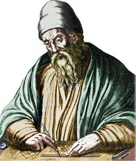

Starting Out with Python describes the use of IPO Charts to help design and document functions. The chart has three columns, input, processing, output:
An example IPO chart for our version of absolute value:
"""
+-----------------------------------------------------+
| absolute_value |
+-----------------------------------------------------+
| input | processing | output |
+------------------+-------------------+--------------+
| the number to be | calculate the | a number |
| processed | number's distance | representing |
| | from 0, e.g. -5 | the absolute |
| | is 5 away from 0 | value |
+------------------+-------------------+--------------+
"""Does anyone remember what the factorial of a number is? For example, what is 4!? →
24
The factorial of a number is the product of all positive integers less than or equal to that number.
The previous example of 4! is:
>>> 4 * 3 * 2 * 1
24We want a function that takes a number and gives back (not prints out!) the factorial of that number.
Example usage:
>>> result = factorial(4)
>>> print(result)
24
>>> result = factorial(0)
>>> print(result)
1How many arguments will the factorial function take, if any? What processing will it do? What will it return, if anything? →
Our no frills IPO chart for factorial:
In pseudocode, what would the implementation of this function look like? →
define a function that takes one parameter
keep track of the product...
for every number less than or equal to n (up to, but not including 0)
multiply the product by each numberHere's a possible iterative solution:
def factorial(n):
product = 1
for i in range(n, 0, -1):
product = product * i
return product
print(factorial(4))
print(factorial(20))How would I use this function in a program that asks the user for a number… and then prints out the factorial of that number? →
def factorial(n):
product = 1
for i in range(n, 0, -1):
product = product * i
return product
user_input = input("Give me a number, I'll give you the factorial\n>")
num = int(user_input)
print(factorial(num))Write a program that determines whether or not a user inputted movie was made by David Lynch.
Go!→
Give me a movie title
>Blue Velvet
Blue Velvet a David Lynch movie!
Give me a movie title
>Clueless
There's a fish in the percolator
Give me a movie title
>qmovie = "Blue Velvet"
result = is_a_david_lynch_movie(movie)How many arguments will it take, if any? What processing will it do? What will it return, if anything? →
Our no frills IPO chart for is_a_david_lynch_movie:
def is_a_david_lynch_movie(s):
if s == "Blue Velvet" or s == "Dune" or s == "Lost Highway":
return True
else:
return False
movie = input("Give me a movie title\n>")
while movie != 'q':
if is_a_david_lynch_movie(movie):
print("%s a David Lynch movie!" % (movie))
else:
print("There's a fish in the percolator")
movie = input("Give me a movie title\n>")What's the greatest common divisor (GCD) for 12 and 8?
4

Who was that? That was Euclid (obv!).
One method for finding the greatest common divisor is using Euclid's Algorithm:
By hand, find the GCD of 12 and 8 using Eclid's Algorithm. →
Larger of the pair goes in column A
A | B | delta
___|___|______
12 | 8 | 4
8 | 4 | 4 (4 replaced 12)
4 | 4 | 0 (Done!)By hand, find the GCD of 60 and 24 using Eclid's Algorithm. →
Larger of the pair goes in column A
A | B | delta
___|___|______
60 | 24| 36
36 | 24| 12 (36 replaced 60)
24 | 12| 12 (12 replaced 36)
12 | 12| 0Create a function that calculates the greatest common divisor of two numbers by using Euclid's algorithm.
number_1, number_2 = 24, 144
greatest_common_divisor = gcd(number_1, number_2)
print(greatest_common_divisor)How many arguments will it take, if any? What processing will it do? What will it return, if anything? →
Our no frills IPO chart for gcd:
create a function that takes two arguments, a and b
while a and b aren't equal...
let's make sure that we know which variable is the larger one
(we'll always assign it to a)
if a is larger than b, then swap
otherwise a gets changed to the difference between itself and b# version 1
def gcd(a, b):
while a != b:
if a > b:
a = a - b
else:
b = b - a
return a# version 2
def gcd(a, b):
while a != b:
# let's always make a the larger number
if a < b:
# swap the values!
a, b = b, a
else:
a = a - b
return a
print(gcd(12, 8))
print(gcd(30, 105))